The Edit Tools represent a real-world application of the uDig Tools framework.
Working with Edit Tools is a pretty advanced topic that brings together all your knowledge of uDig development. Be kind to yourself and go through this material slowly, asking questions on the developer list as needed.
The main purpose of Tools is to intercept events from the user and produce commands to modify the data model.
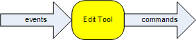
The layer black board is always used as a place for plug-in collaboration. While the blackboard is often used to store simple data, it can also be used to store complete Objects (with their own functionality and event system).
The Edit Tools framework uses the layer blackboard in this manner, to store an entire object:
EditBlackboard editBlackboard = layer.getBlackboard().get(EditBlackboardUtil.EDIT_BLACKBOARD_KEY);
The EditBlackboard is used to gather up changes provided by the Edit Tools. We are going to move on to the details now, please keep this overview on how tool / layer / command collaboration works in mind.
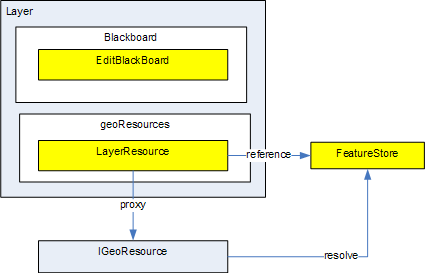
The IProvider interface is really just used to capture the idea of a pointer or proxy to a value. It represents a promises that a value of the
expected type will be available when asked.
The Edit Tool Framework makes use of:
The central classes in the editing framework are the AbstractEditTool, EditToolHandler, EditBlackboard classes.
Edit Tools literally are an extention of SimpleTool (that is they have a right click "context" menu), that delegate their functionality to a small "engine" called EditToolHandler. The AbstractEditTool has little functionality beyond configuring the EditToolHandler object upon creation.
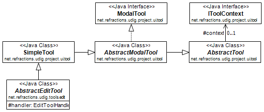
AbstractEditTool implementations are responsible implementing several init methods that are used when configuring the EditToolHandler for use.
You will notice that each one of these methods is provided with a configuration object (a List or EditToolConfigurationHelper) which it can fill in.
You can think of these methods as provided a simple scripting language which is used to describe what the tool is capable of.
Edit Tool handler operates as an "engine" that will dispatch the incoming events to any active Behaviors; it is responsble for holding the "state" of the AbstractEditTool including the cursor and any draw commands providing visual feedback.
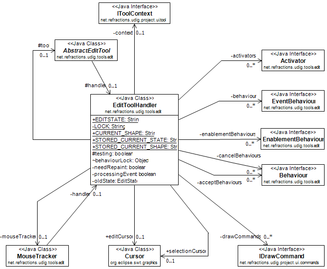
The EditToolHandler:
The Edit Blackboard is used as a scratch pad for EditTools to collaborate; literally it is used to hold on to any selected Features (each selected Feature is represented as an EditGeom. You can switch between tools, each of which will interact with the EditBlackBoard in a different manner.
The main responsibility of the EditBlackboard is to provide methods for efficiently editing geometries. To that effect:
Represents a selected Feature on the EditBlackboard, while this sounds like a simple responsibility the reality is a bit more complicated in that visual feedback and interaction requires a very fast response. As such the EditGeom maintains a bunch of cached information (usually simplifications of the original Geometry) in order to respond quickly to mouse clicks.
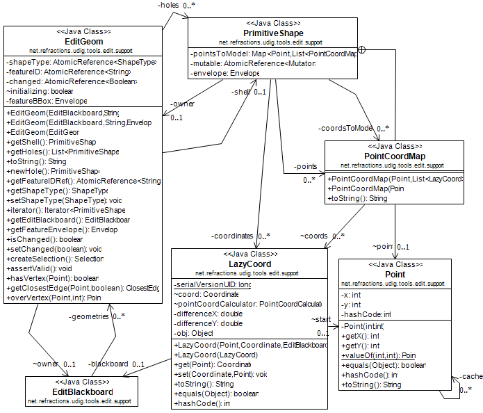
In the above diagram you can see a little bit of the "cached information" in the form of:
AbstractEditTool.initEnablementBehaviours is used to define when the tools should be enabled for use.
Here is an example from the PointTool:
protected void initEnablementBehaviours( List<EnablementBehaviour> helper ) { helper.add(new WithinLegalLayerBoundsBehaviour()); helper.add(new ValidToolDetectionActivator(new Class[]{Geometry.class, Point.class, MultiPoint.class})); }
initActivators is used to provide a list of things to do when the tool is enabled and disabled.
Here is an example from the PointTool:
protected void initActivators( Set<Activator> activators ) { activators.add(new EditStateListenerActivator()); activators.add(new DeleteGlobalActionSetterActivator()); activators.add(new DrawGeomsActivator(DrawGeomsActivator.DrawType.POINT)); activators.add(new DrawCurrentGeomVerticesActivator()); activators.add(new SetSnapBehaviourCommandHandlerActivator()); activators.add(new AdvancedBehaviourCommandHandlerActivator()); activators.add(new SetRenderingFilter()); activators.add(new GridActivator()); }
An EnablementBehaviour is a callback object invoked by EditToolHandler to check if the tool can be used at the present time. Please note that this callback object will return a String to be used in the status bar; or null if everything is okay.
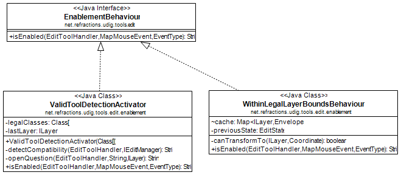
An activator is a simple callback object invoked by the EditToolHandler to wire the edit tool framework up to the application (using listeners, providing draw commands for visual feedback and so forth):
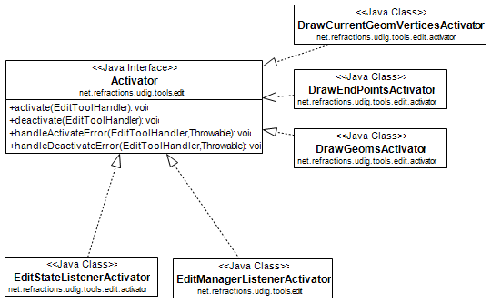
In practice an Activator is used in a manner similar to a Runnable to wire the application together - examples include:
initAcceptsBehaviours lists ways in which the tool knows a feature is "Accepted" and ready to be sent to the FeatureStore. The AcceptChangesBehaviour is bound to a double click action or the "Enter" key being pressed. You may also consider the DeslectEditShapeAcceptBehaviour to accept a change when the user moves on to a different feature.
Here is an example from the PointTool:
protected void initAcceptBehaviours( List<Behaviour> acceptBehaviours ) { acceptBehaviours.add( new AcceptChangesBehaviour(Point.class, false) ); acceptBehaviours.add( new DeselectEditShapeAcceptBehaviour() ); }
initCancelBehaviors lists way for a tool to know that modifications to a feature are "Canceled" and should be thrown out.
Here is an example from the PointTool:
protected void initCancelBehaviours( List<Behaviour> cancelBehaviours ) { cancelBehaviours.add(new DefaultCancelBehaviour()); }
Functionality used by the EditToolHandler if the isValid method returns true.
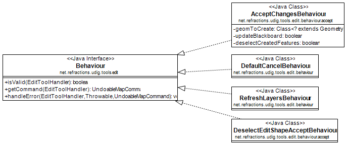
Example implementations:
The initEventBehaviours captures how the AbstractEditTool interacts with the user. Rather than a simple list, a EditToolConfigurationHelper object is provided for you to fill in. You can treat this method like a small scripting language in which you can define alternative functionality based on what the user is doing (say if the user is over top of a vertex you may want to move the vertex rather than create a new point).
Here is an example from the PointTool:
protected void initEventBehaviours( EditToolConfigurationHelper helper ) { helper.add( new DrawCreateVertexSnapAreaBehaviour()); helper.add(new StartEditingBehaviour(ShapeType.POINT)); helper.add( new AcceptBehaviour() ); helper.add( new SetSnapSizeBehaviour()); helper.done(); }
EventBehaviour is literally the point of the edit tool framework; it is responsible for turning events into commands. Implementations exist for a range of activities; and you are free to make your own.
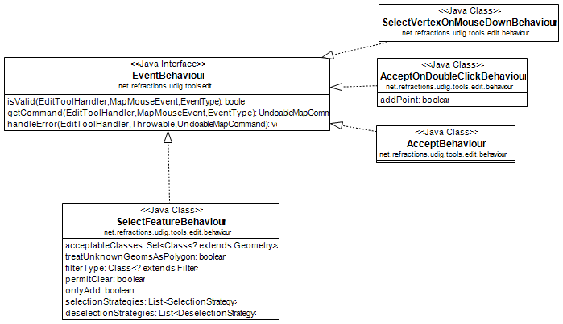
EventBehaviour is called when when events are raised by the mouse or keyboard. All EventBehaviours have an isValid() method that is called to determine whether or not the behaviour is can be used given the current state of the EditToolHandler and and the type of event that occurred. If the EventBehaviour is valid then the getCommand() method will be called by the EditToolHandler and executed by the current map's command manager. Since both isValid() and getCommand() are executed in the display thread the amount of work they do must be very quickly executed so as to not impact the user interaction.
*EventBehaviour.isValid() is used to determine the behavior is applicable or can be used.
Here is an example from AcceptBehaviour:
public boolean isValid( EditToolHandler handler, MapMouseEvent e, EventType eventType ) { boolean legalState=handler.getCurrentState()==EditState.CREATING; boolean legalEventType=eventType==EventType.RELEASED; boolean shapeAndGeomNotNull=handler.getCurrentShape()!=null; boolean button1Released=e.button==MapMouseEvent.BUTTON1; return legalState && legalEventType && shapeAndGeomNotNull && button1Released && !e.buttonsDown() && !e.modifiersDown(); }
getCommand() is called to turn the provided event into an UndoableMapCommand that will be executed on your behalf:
Here is an example from AcceptBehaviour:
public UndoableMapCommand getCommand( EditToolHandler handler, MapMouseEvent e, EventType eventType ) { if( !isValid(handler, e, eventType) ) throw new IllegalArgumentException("Current state is not legal"); //$NON-NLS-1$ List<UndoableMapCommand> commands=new ArrayList<UndoableMapCommand>(); commands.add(handler.getCommand(handler.getAcceptBehaviours())); if( handler.getCurrentState()==EditState.CREATING) commands.add(new SetEditStateCommand(handler, EditState.MODIFYING)); UndoableComposite undoableComposite = new UndoableComposite(commands); undoableComposite.setMap(handler.getContext().getMap()); try { undoableComposite.run(new NullProgressMonitor()); } catch (Exception e1) { throw new RuntimeException(e1); } return new UndoRedoCommand(undoableComposite); }
Finally handleError is used to provide feedback in the case of an exception; feedback can range from a pop up bubble to a simple log message:
public void handleError( EditToolHandler handler, Throwable error, UndoableMapCommand command ) { EditPlugin.log( "Could not move vertex", error); //$NON-NLS-1$ }
This class is where all the "fun" comes into the edit tool framework; the use of this class when implementing AbstractEditTool.initEventBehaviours is where you seriously get to customize and define what the user experience is.
You can add() a Behaviour to an EditToolConfigurationHelper in a manner similar to a list; and call done() at the end of your script:
helper.add( new DrawCreateVertexSnapAreaBehaviour()); helper.add(new StartEditingBehaviour(ShapeType.POINT)); helper.add( new AcceptBehaviour() ); helper.add( new SetSnapSizeBehaviour()); helper.done();
You can define list of behaviours to execute in order. This operates in a manner similar to a series of statements in a programming language.
By default behaviours are processed in the DisplayThread:
helper.startOrderedList(); helper.add( ... step one ... ); helper.add( ... step two... ); helper.stopOrderedList();
Behaviours executed in the display thread should not perform any I/O and should be used for quick updates to the model only.
You can also ask for the behaviours to be run in the command thread:
helper.startOrderedList( true );
helper.add( ... step one ... );
helper.add( ... step two... );
helper.stopOrderedList();
This is useful when earlier commands change state required by later commands; or if any I/O is required.
You can define a mutually exclusive list of behaviours (only the first one that is valid will be used) using the following syntax:
helper.startMutualExclusiveList(); helper.add( new SelectVertexOnMouseDownBehaviour() ); helper.add( new SelectVertexBehaviour() ); helper.add( new SelectFeatureBehaviour( ... )); helper.stopMutualExclusiveList();
This operates in a manner similar to a series of if / then / elseif statements in a programming language.
You can define "advanced features" using the following syntax:
helper.add( ..normal behaviour... )
helper.startAdvancedFeatures();
helper.add( ...behaviour for advanced mode only... );
helper.stopAdvancedFeatures();
You can also include an optional section of "else features" that will only be included in normal mode:
helper.add( ..normal behaviour... ) helper.startAdvancedFeatures(); helper.add( ...behaviour for advanced mode only... ); helper.startElseFeatures(); helper.add( ...behaviour for normal mode only... ); helper.stopElseFeatures(); helper.stopAdvancedFeatures();
The idea of Advanced Features acts as a big switch the user can throw as a Windows > Preference setting. You can consider this switch as a toggle; when it is enabled EditToolConfiguration will read in one configuration
Consider the previous example of PointTool; if we wanted to make an advanced PointTool that in addition to creating points could also select existing points and move them we would have a script like this:
helper.add( new DrawCreateVertexSnapAreaBehaviour()); helper.add( new CursorControlBehaviour( .. )); helper.startMutualExclusiveList(); // choose the first one that works helper.add( new SelectVertexOnMouseDownBehaviour() ); helper.add( new SelectVertexBehaviour() ); helper.add( new SelectFeatureBehaviour( ... )); helper.stopMutualExclusiveList(); helper.add( new MoveVertexBehaviour() ); helper.add( new AcceptBehaviour() ); helper.add( new SetSnapSizeBehaviour()); helper.done();
We can combine both ideas using a single script:
helper.add( new DrawCreateVertexSnapAreaBehaviour()); { helper.startAdvancedFeatures(); ConditionalProvider defaultMessage = new ConditionalProvider( handler, Messages.PointTool_select_or_create_feature,Messages.PointTool_add_vertex_or_finish); CursorControlBehaviour.SystemCursorProvider overVertexCursor = new CursorControlBehaviour.SystemCursorProvider(SWT.CURSOR_SIZEALL); ConditionalProvider overVertexMessage = new ConditionalProvider( handler, Messages.PointTool_move_vertex,null ); CursorControlBehaviour.SystemCursorProvider overEdgeCursor = new CursorControlBehaviour.SystemCursorProvider(SWT.CURSOR_CROSS); ConditionalProvider overEdgeMessage = new ConditionalProvider( handler, Messages.PointTool_add_vertex, null); helper.add( new CursorControlBehaviour( handler, defaultMessage, overVertexCursor, overVertexMessage, overEdgeCursor, overEdgeMessage ) ); helper.stopAdvancedFeatures(); } // vertex selection OR geometry selection should not both happen so make them a mutual exclusion behaviour { helper.startMutualExclusiveList(); { helper.startAdvancedFeatures(); helper.add( new SelectVertexOnMouseDownBehaviour() ); helper.add( new SelectVertexBehaviour() ); SelectFeatureBehaviour selectGeometryBehaviour = new SelectFeatureBehaviour(new Class[]{Point.class, MultiPoint.class}, BBOX.class); selectGeometryBehaviour.initDefaultStrategies(ShapeType.POINT); helper.add(selectGeometryBehaviour); { helper.startElseFeatures(); helper.add(new StartEditingBehaviour(ShapeType.POINT)); helper.stopElseFeatures(); } helper.stopAdvancedFeatures(); } helper.stopMutualExclusiveList(); } { helper.startAdvancedFeatures(); helper.add( new MoveVertexBehaviour() ); helper.stopAdvancedFeatures(); } helper.add( new AcceptBehaviour() ); helper.add( new SetSnapSizeBehaviour()); helper.done(); }
The point of an EventBehavior is to set up some (usually undoable) commands for the system to perform.
Selecting feature content is an interesting enough problem that there is a ready made SelectFeaturesAtPointCommand ready to leap into action.
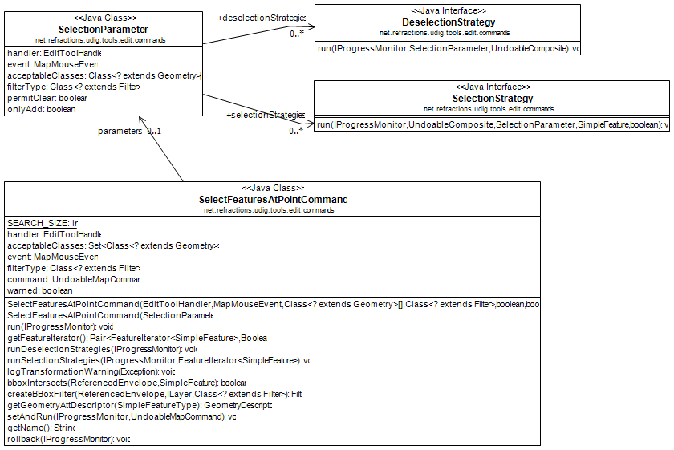
To customize the functionality of this Selection command (or your own selection command). You can make use of the following:
For more information please review the net.refractions.udig.tutorials.tool.coverage implementation of a selection command that works on a single feature while selecting its neighbors as well.
Here is an example selection parameter taken from the above tutorial:
protected void initEventBehaviours( EditToolConfigurationHelper helper ) { helper.startMutualExclusiveList(); helper.add(new SelectVertexOnMouseDownBehaviour()); helper.add(new SelectVertexBehaviour()); SelectFeatureBehaviour selectFeatureBehaviour = new SelectFeatureBehaviour(new Class[]{Geometry.class}, Intersects.class ); selectFeatureBehaviour.addSelectionStrategy(new SelectNeightborsStrategy()); helper.add(selectFeatureBehaviour); helper.stopMutualExclusiveList(); helper.add( new MoveVertexBehaviour() ); helper.done(); }
When manipulating feature content it is really easy to make something that is invalid (say a polygon with a "hole" that crosses the edge of the polygon). While it is easy to catch this problem at the end of the day (when accept behaviours churn through your edit black board and fail when creating a geometry) it is much nicer to provide an immediate check and let the user know something is wrong.
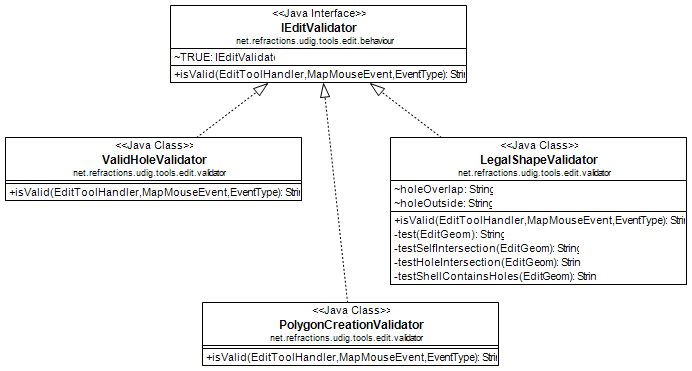
The class will return a String consisting of the error message.
The IEditValidator interface defines a single isValid method; the implementation here is an example from PolygonCreationValidator:
public String isValid( EditToolHandler handler, MapMouseEvent event, EventType type ) { PrimitiveShape shell = handler.getCurrentShape(); Point newPoint = Point.valueOf(event.x, event.y); int lastPointIndex = shell.getNumPoints()-1; if( shell.getNumPoints()>2 && EditUtils.instance.intersection(shell.getPoint(lastPointIndex), newPoint, shell, 0, lastPointIndex) ){ return Messages.ValidHoleValidator_selfIntersection; } return null; }
The following implementations are provided out of the box:
You will want to make your own implementation when providing immediate feedback on additional restrictions.
When changing snapping behavior; or failing a validation check you can see feedback in the form of little pop-up bubbles. Here is how this is done for MoveVertexBehavior when a validation fails.
private void openErrorBubble( EditToolHandler handler, MapMouseEvent e, String errorMessage ) { MessageBubble bubble=new MessageBubble(e.getPoint().x, e.getPoint().y, errorMessage, PreferenceUtil.instance().getMessageDisplayDelay() ); AnimationUpdater.runTimer(handler.getContext().getMapDisplay(), bubble);
Note the positioning of the bubble right at the location the user just gave us - making sure they notice the feedback.
Edit tools are another sub-type of tools, however they do not (yet) have their own extension point. Instead they are extensions of the net.refractions.udig.project.ui.tool extension point. Because there are a large number of editing tools that can be created an many of them have similar functionality there is a little framework associated with edit tools development.